論壇網站
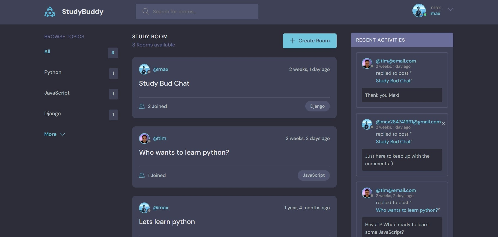一、簡介
這是由 Django 框架寫成的一個類似 dcard 的論壇網站，此論壇網站提供一個互相交流的平台，
成員之間可以自行成立聊天室並針對感興趣的主題互相討論，且能夠得知用戶最新的訊息。
二、功能說明
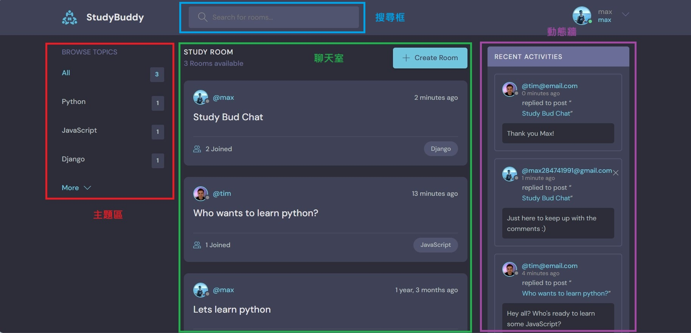
紅色方框為主題區，呈現所有聊天室的主題標籤，點按即可篩選並呈現特定標籤的聊天室，點按More可以進入主題標籤篩選畫面；
綠色方框為聊天室，顯示所有聊天室，包含聊天室創立人、標題、參加成員數、成立時間、主題標籤；
紫色方框為動態牆，顯示所有即時的動態訊息，包含訊息發起人、訊息時間、回應的聊天室、訊息內容；
藍色方框為搜尋框，搜尋關鍵字以尋找聊天室。
A. 主題區
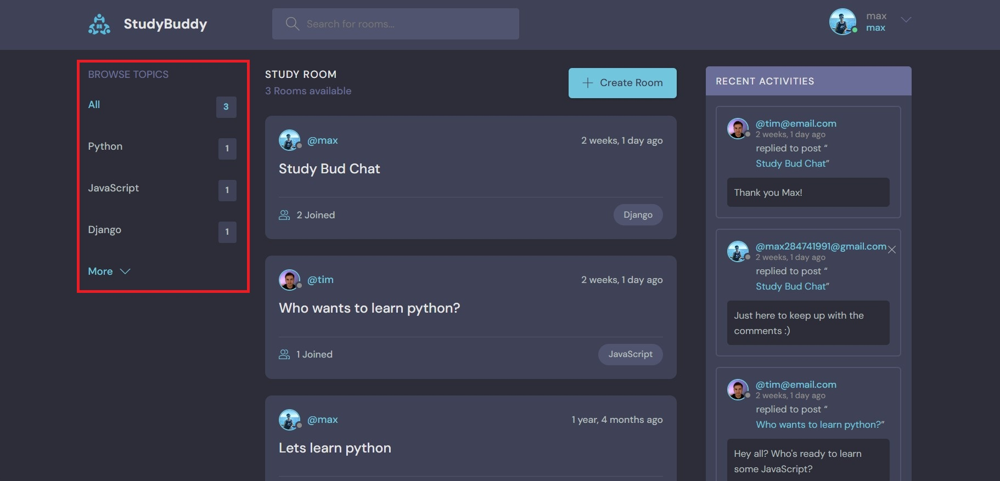紅色方框為主題區，呈現所有聊天室的主題標籤，點按即可篩選並呈現特定標籤的聊天室，點按More可以進入主題標籤篩選畫面。
操作說明
Step1：主題標籤篩選
點按More可以進入主題標籤篩選畫面，如下圖。可以輸入或點擊主題標籤，篩選並呈現特定標籤的聊天室。
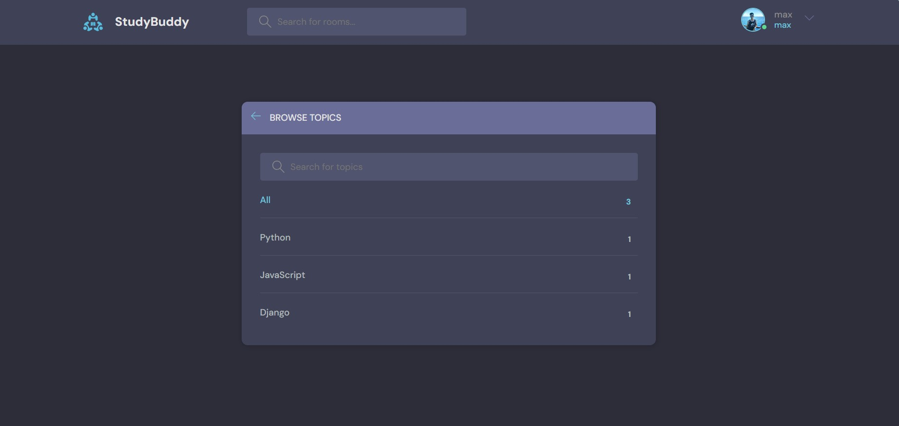
Step2：呈現篩選之特定主題標籤聊天室
下圖呈現篩選JavaScript主題標籤之畫面。
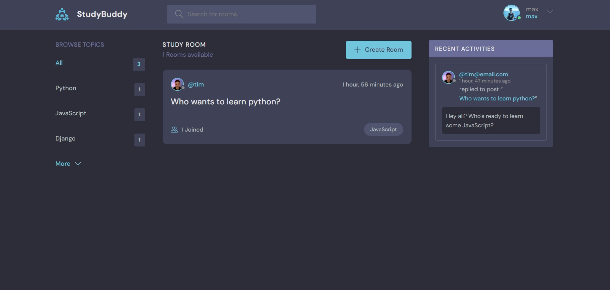
B. 聊天室
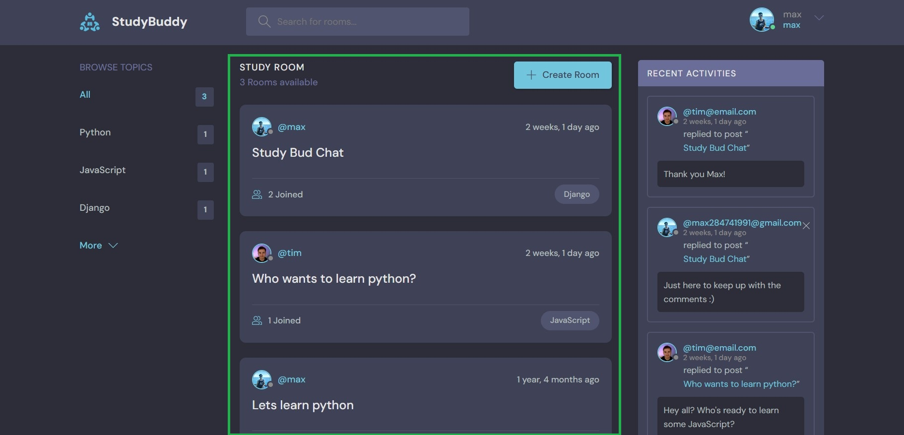綠色方框為聊天室，顯示所有聊天室，包含聊天室創立人、標題、參加成員數、成立時間、主題標籤。
操作說明
Step1：點選聊天室
點按標題可以查看聊天室內容。
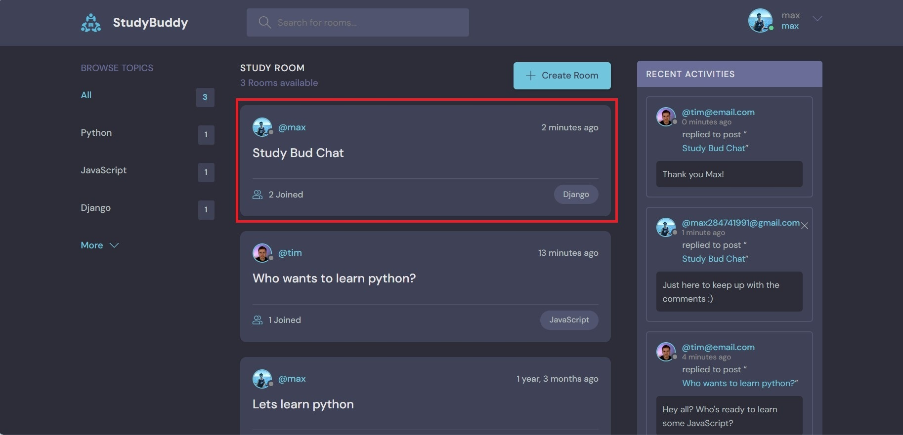
Step2：呈現聊天室內容
下圖呈現特定聊天室之畫面，包含聊天訊息、訊息資訊和聊天成員。
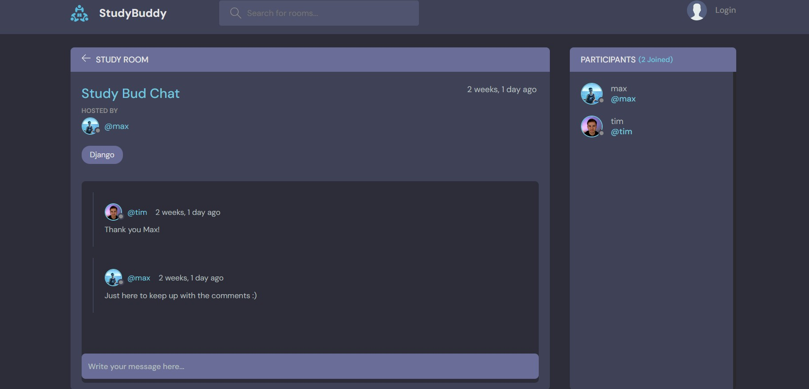
C. 動態牆
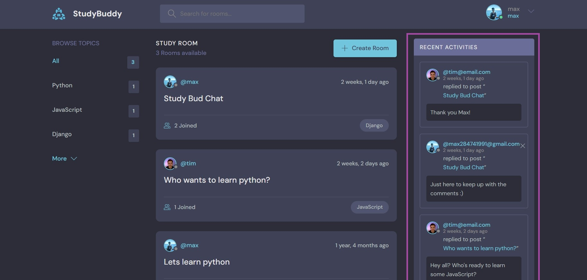紫色方框為動態牆，顯示所有即時的動態訊息，包含訊息發起人、訊息時間、回應的聊天室、訊息內容。
操作說明
1. 點按回應的聊天室
點按回應的聊天室可以跳至特定的聊天室。
2. 點按訊息發起人
點按訊息發起人即可查看訊息發起人之個人資訊。
如下圖，包含個人大頭照、介紹、建立的聊天室以及近期動態。
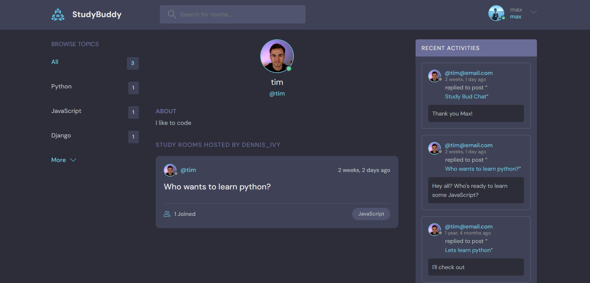
D. 搜尋框
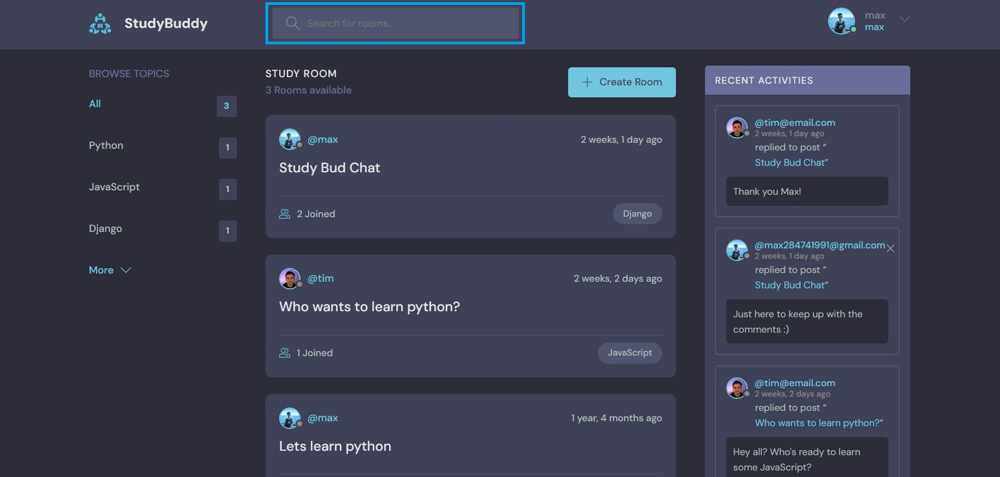藍色方框為搜尋框，搜尋關鍵字以尋找聊天室。
三、帳號管理
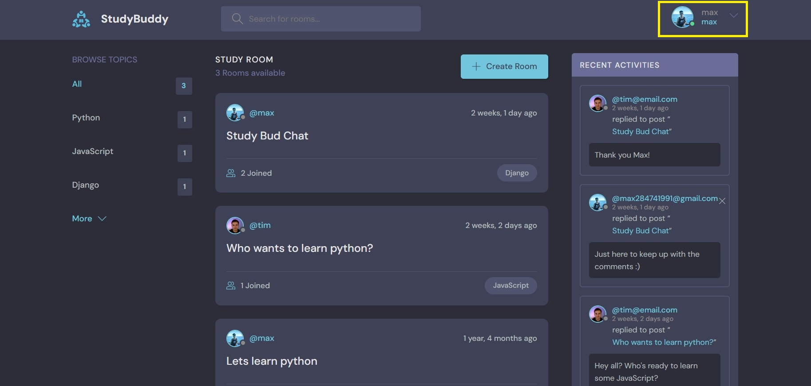登入已有帳號、註冊新帳號以及修改個人檔案
登入
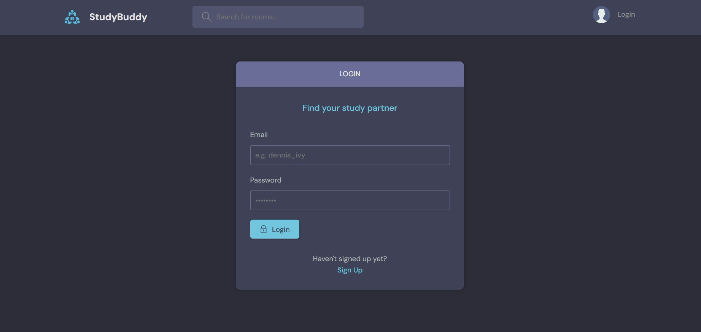
註冊
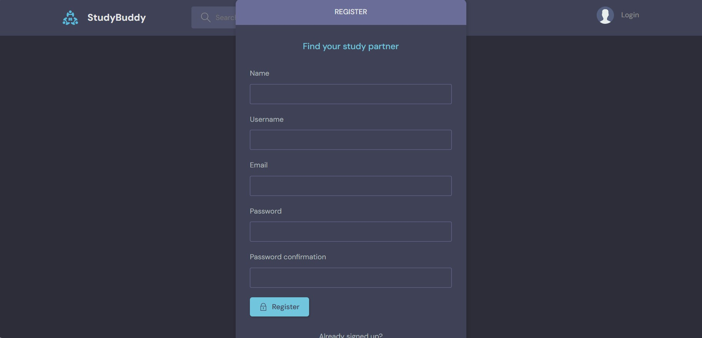
修改個人檔案
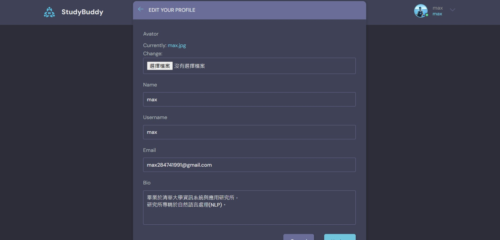